Cornerstone of Engineering 1 — Final Project
A portable, arcade-style reaction game built with the Raspberry Pi Pico. Arcadium addresses the need for simple, affordable, hands-on entertainment that engages users through electronics. The project features a circular LED array for gameplay, integrated LCD display for scoring, and a unique candy dispenser reward system—all housed in a custom laser-cut wood enclosure with acrylic viewing window.
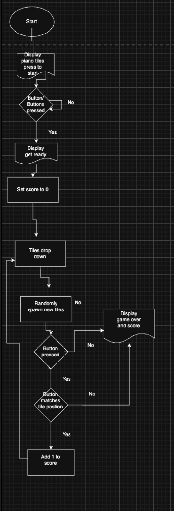
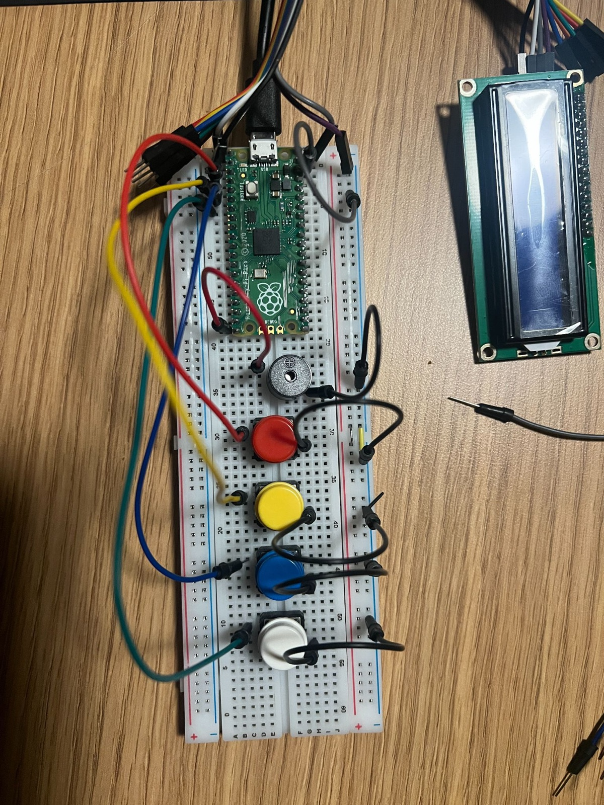
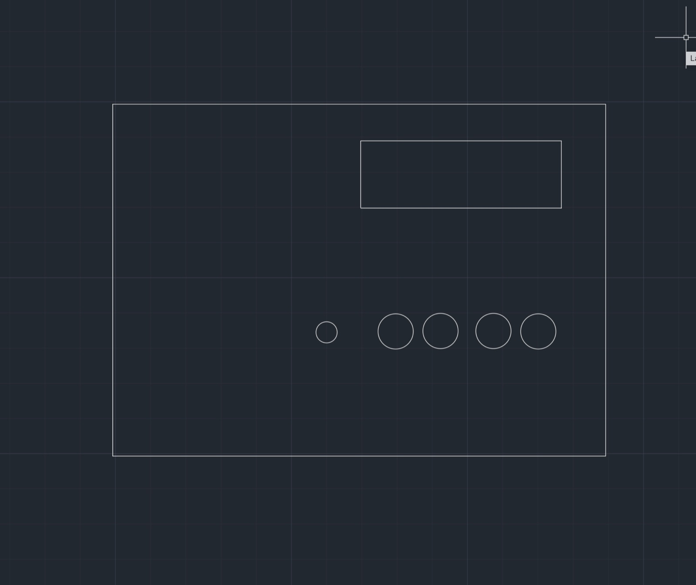
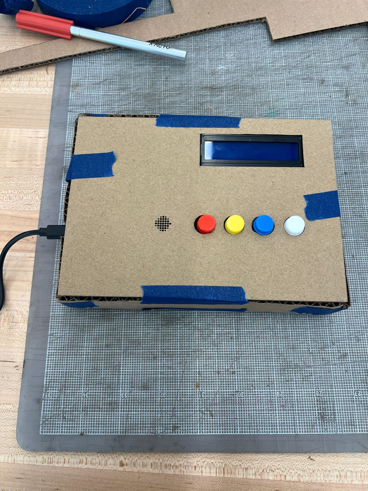
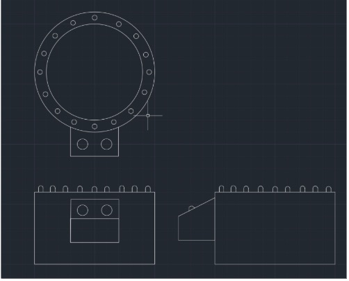
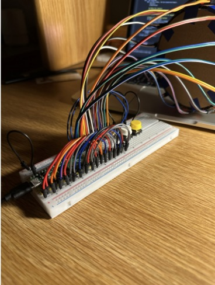
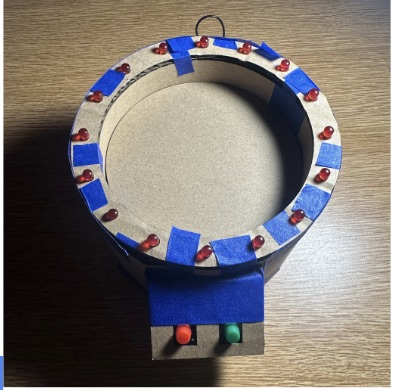
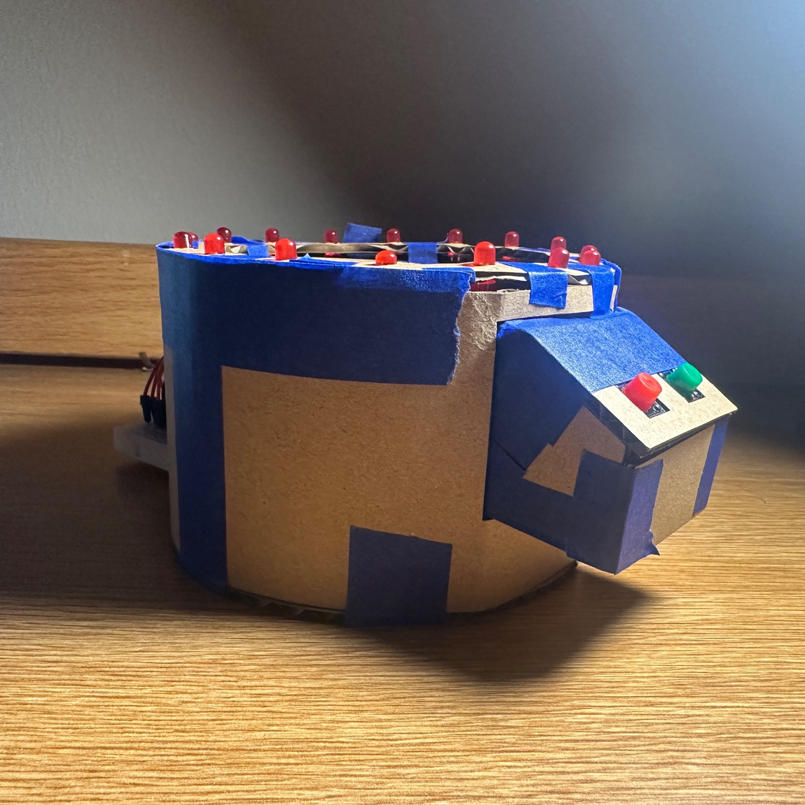
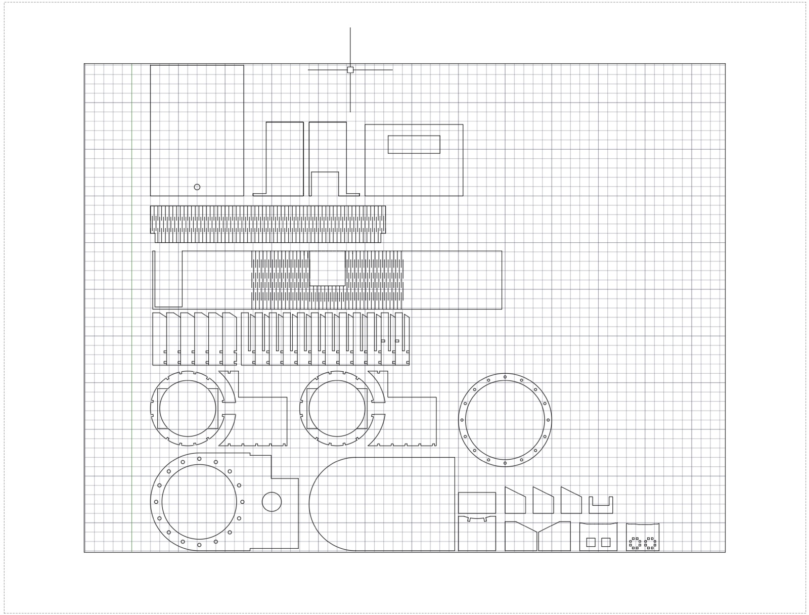
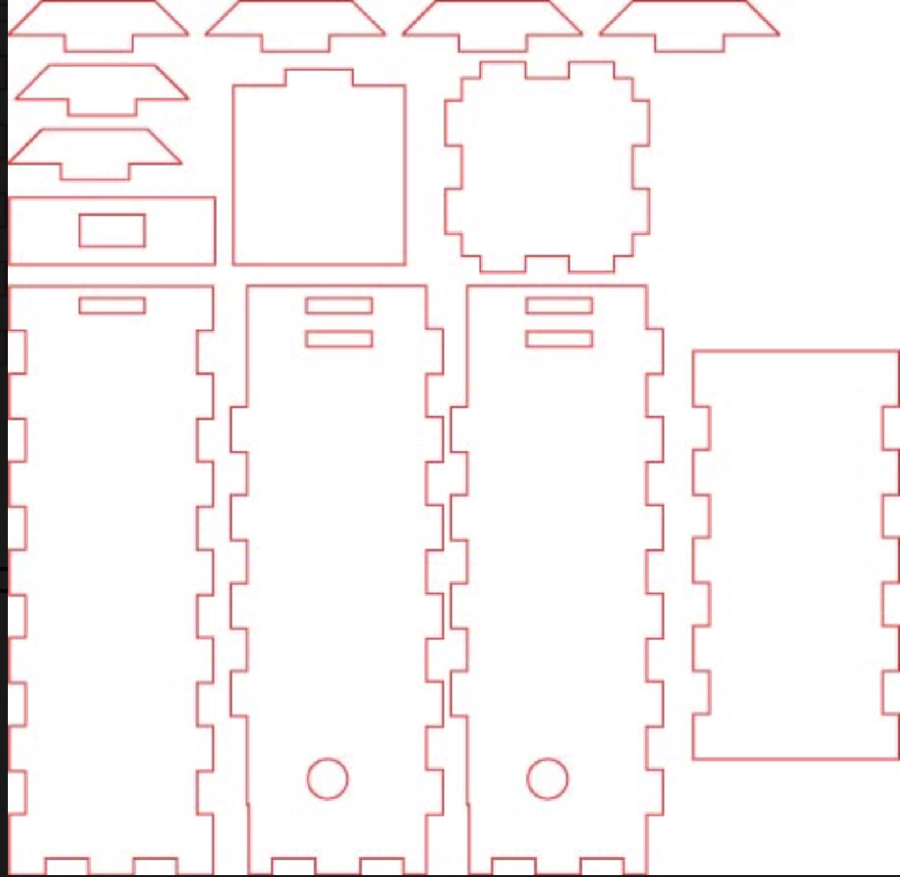
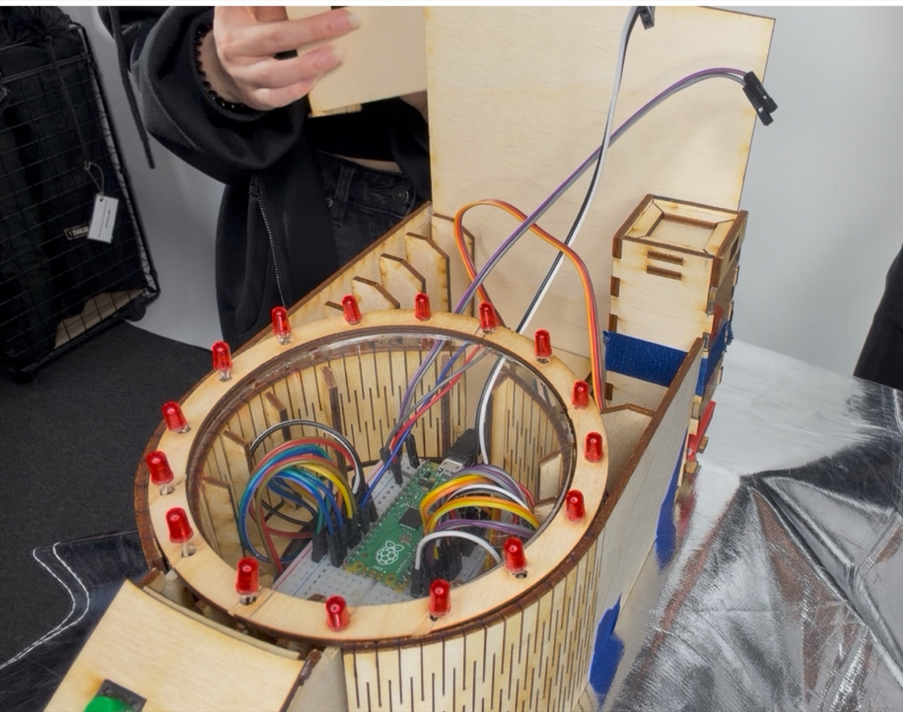
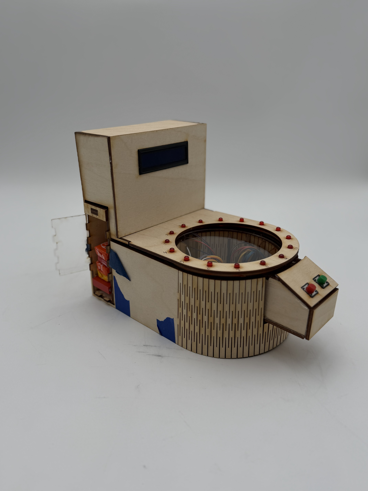
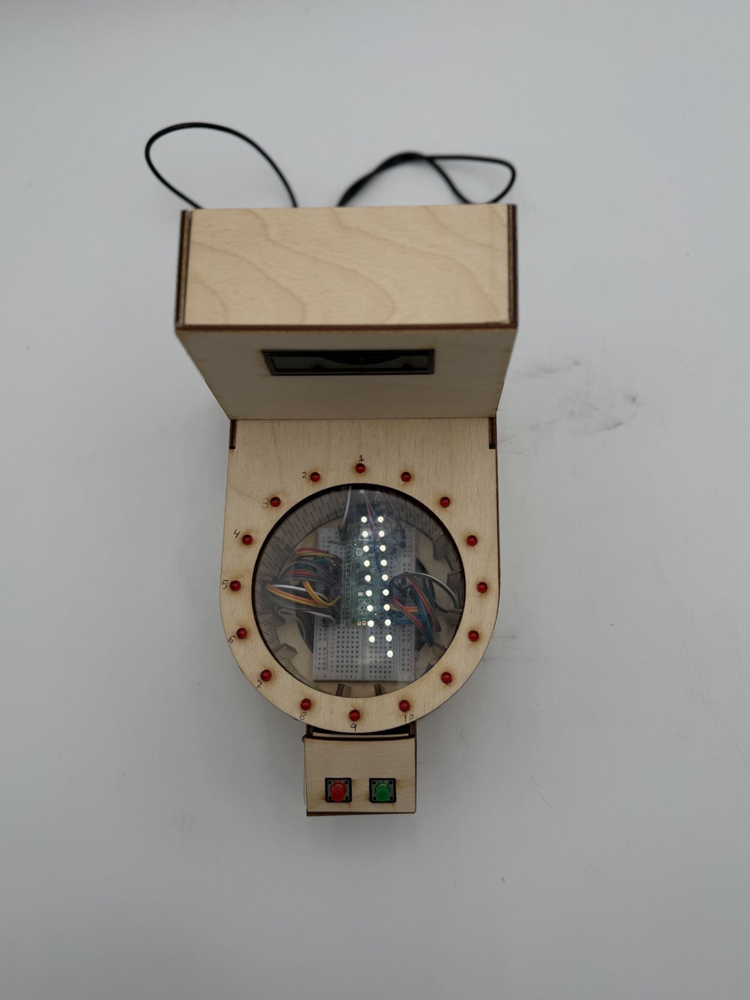
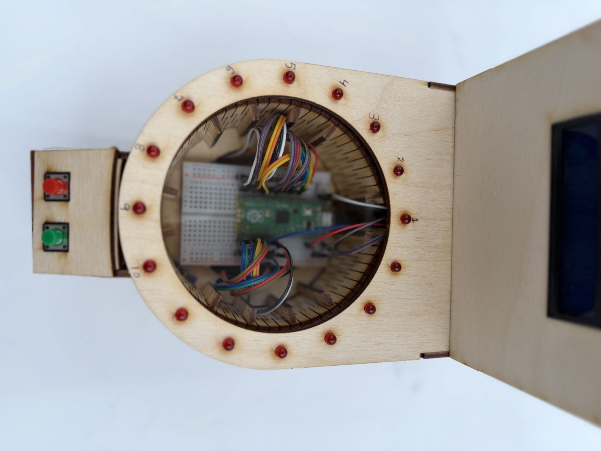